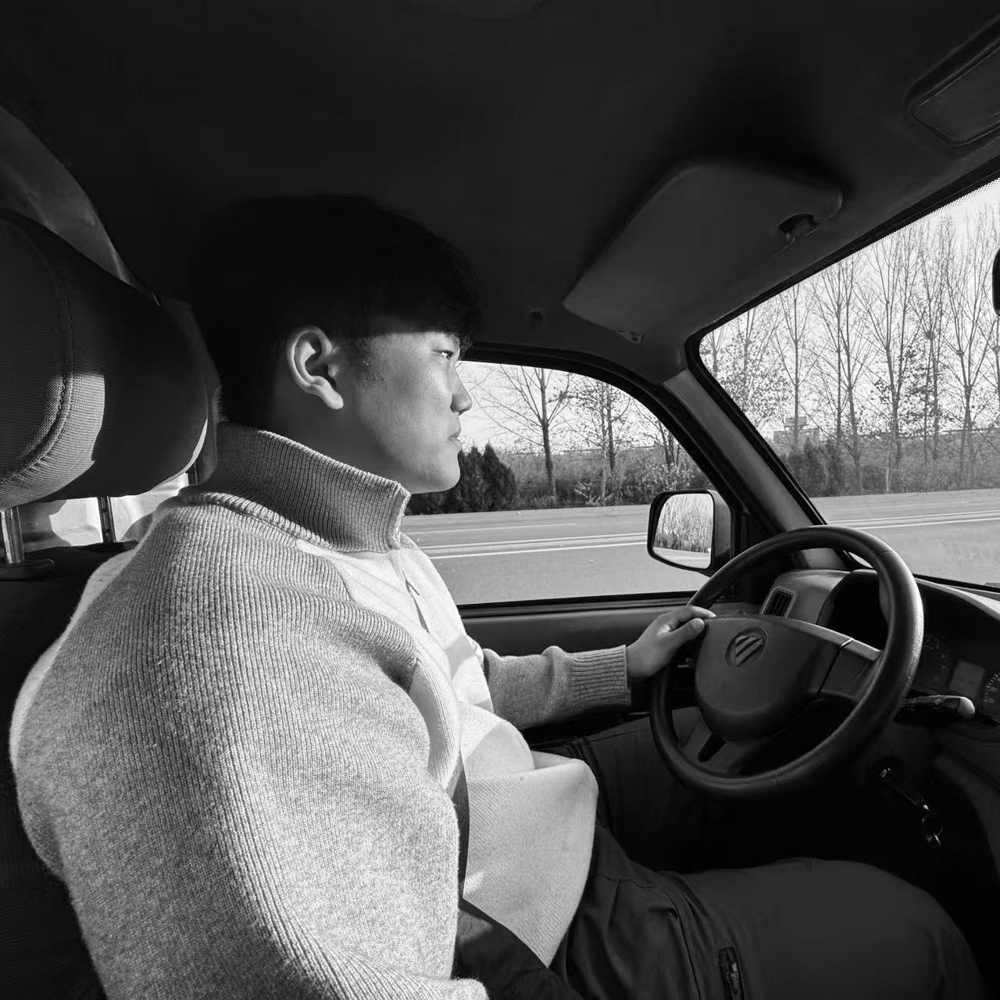
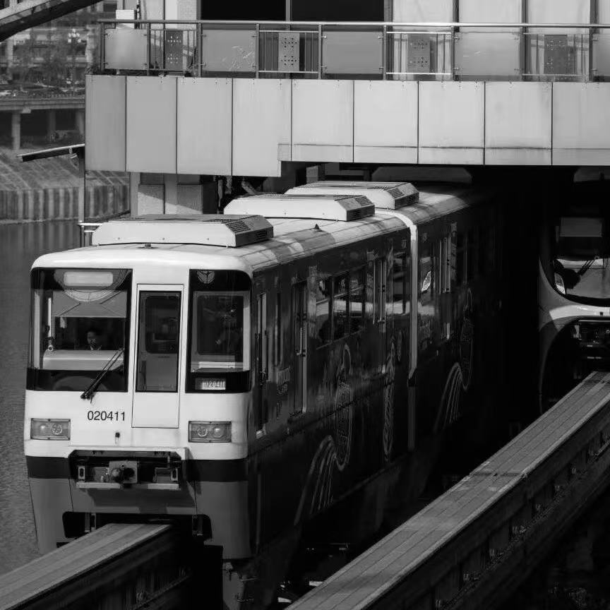
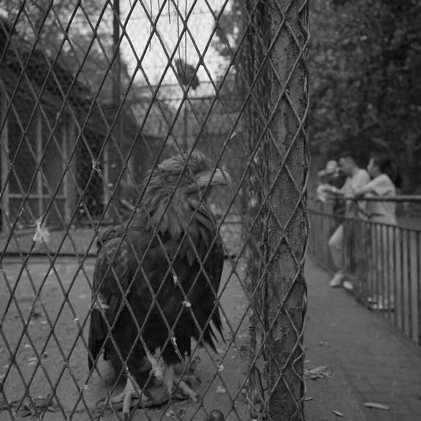

Based in Hong Kong
Journalism Student Dedicated to Uncover Truth and Trends




I am a journalism student and a feature reporter with over two years of internship experience. Throughout my career in media, I have produced content for both emerging digital platforms and traditional outlets, specializing in high-impact investigative and long-form reporting. My background in communication and journalism enables me to deliver professional coverage across diverse beats, including social breaking news, finance, technology, the environment, and multimedia journalism.
I believe that curiosity is my most vital trait and the driving force behind my career. I possess an insatiable desire to understand the world, particularly within its most innovative and significant frontiers. As a proactive learner, I am currently integrating AI tools into my workflow while expanding my expertise in finance, accounting, and programming. By synthesizing my journalistic skills with interdisciplinary knowledge, I aim to explore new professional horizons and uncover, interpret, and resolve complex challenges.
Assisted mentor journalist from the Feature Studio in completing their work, independently reported news topics, conducted interviews, and wrote articles.
Contributed articles to NetEase's non-fiction column "Kanke Insight," which included independently reporting on topics, conducting interviews, and writing articles.
Responsible for content production of short videos on health industry information, completing the entire process including topic proposal application, copywriting, and video editing.